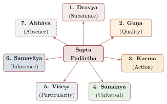
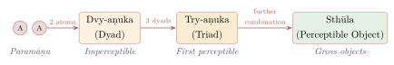

Chapter 3: Vaiśeṣika — Atomism and the Categories of Reality¶
Opening of Vaiśeṣika Sūtra
athāto dharmaṃ vyākhyāsyāmaḥ
Now, therefore, we shall expound dharma.
— Vaiśeṣika Sūtra 1.1.1
3.1 Historical Background and Foundational Texts¶
The Vaiśeṣika school derives its name from viśeṣa (particularity or distinction), reflecting its emphasis on the differentiation and classification of all that exists. It offers a systematic realist ontology and an atomic theory of matter. Indian and Greek atomism (Leucippus and Democritus, 5th century BCE) appear to have developed independently; the Vaiśeṣika form is known only from texts later than the Greek one, and claims of Indian priority are not supported by the evidence (Halbfass 1992).
Historical Note: The Founder — Maharshi Kaṇāda
The founder of Vaiśeṣika is the sage Kaṇāda (also known as Ulūka or Kaṇabhuk), whose name is usually explained as “grain-eater” (kaṇa, a grain or particle). Tradition says he lived on grains gleaned from the fields; opponents punned on the name. The Vaiśeṣika Sūtra is a layered text, usually dated in its earliest form to c. 1st century BCE – 1st century CE; its transmission is complicated, and the oldest surviving commentary (Candrānanda’s) preserves a different recension from the one used by later authors.
3.1.1 Major Texts and Commentators¶
Table 3.1 lists the major texts and commentators.
| Text | Author | Date | Significance |
|---|---|---|---|
| Vaiśeṣika Sūtra | Kaṇāda | c. 1st c. BCE – 1st c. CE | Foundational aphorisms |
| Padārthadharmasaṅgraha | Praśastapāda | c. 6th c. CE | First systematic exposition; introduces īśvara |
| Vyomavatī | Vyomaśiva | c. 10th c. CE | Commentary on Praśastapāda |
| Nyāyakandalī | Śrīdhara | 991 CE | Commentary on Praśastapāda |
| Kiraṇāvalī | Udayana | late 10th c. CE | Commentary on Praśastapāda |
| Saptapadārthī | Śivāditya | c. 11th c. CE | Treats absence as a seventh category |
3.2 The Seven Categories of Reality (Sapta Padārtha)¶
The Vaiśeṣika system classifies all that can be known and named into fundamental categories (padārthas). The vulgate text of the Vaiśeṣika Sūtra (1.1.4; several scholars doubt that this sūtra belonged to the earliest text) and Praśastapāda list six positive categories; absence (abhāva) was recognised as a seventh by later authors such as Śivāditya and Udayana (10th–11th century). The distinction between the six categories and the nine substances (one of the categories) should be kept clear (Halbfass 1992); see Figure 3.1.

3.2.1 1. Dravya (Substance)¶
Substance (dravya) is defined as “that which possesses action and qualities and is an inherence cause” (kriyāguṇavat samavāyikāraṇam iti dravyalakṣaṇam, Vaiśeṣika Sūtra 1.1.15; numbering varies between recensions). Vaiśeṣika enumerates nine substances. Earth, water, fire and air are eternal only in their atomic form; their composite products are impermanent (Table 3.2):
| No. | Dravya | English | Characteristics |
|---|---|---|---|
| 1 | Pṛthivī | Earth | Possesses smell, taste, colour, touch |
| 2 | Ap (Jala) | Water | Possesses taste, colour, touch; viscous |
| 3 | Tejas | Fire/Light | Possesses colour and touch; hot |
| 4 | Vāyu | Air | Possesses touch alone |
| 5 | Ākāśa | Ether/Space | Possesses sound; all-pervading |
| 6 | Kāla | Time | All-pervading; basis of temporal relations |
| 7 | Dik | Direction/Space | All-pervading; basis of spatial relations |
| 8 | Ātman | Self/Soul | All-pervading; conscious; many |
| 9 | Manas | Mind | Atomic in size; internal organ |
Of these, the first four (earth, water, fire, air) are composed of atoms (paramāṇu), while the remaining five are non-atomic and all-pervading (except manas, which is atomic but non-material).
3.2.2 2. Guṇa (Quality)¶
A quality is what inheres in a substance and has no qualities or motions of its own. The Vaiśeṣika Sūtra (1.1.6 in the vulgate) names seventeen qualities; Praśastapāda completed the list to the canonical twenty-four. They fall into natural groups: the five sensible qualities (colour, taste, smell, touch and sound, each the special object of one sense); the general physical qualities of number, magnitude, distinctness, conjunction, disjunction, remoteness and proximity; the qualities of the self — cognition, pleasure, pain, desire, aversion and effort, together with merit (dharma) and demerit (adharma); and heaviness (gurutva), fluidity, viscosity and “tendency” (saṃskāra), which covers impetus, elasticity and the memory-trace. That cognition and pleasure are listed alongside colour and number is characteristic: for Vaiśeṣika the mental is not a separate realm but a set of qualities of one kind of substance, the self.
3.2.3 3. Karma (Action)¶
Action belongs to only one substance at a time and is the cause of conjunction and disjunction; unlike a quality, it is transient by nature, since it ceases once it has produced the new contact. Five kinds are distinguished — throwing upwards, throwing downwards, contraction, expansion and going — the last covering every other kind of motion. Only substances of limited size can move, so that the all-pervading substances (ether, time, space and the self) are motionless.
3.2.4 4. Sāmānya (Universal)¶
Universals are eternal, one, and inhere in many individuals. The argument for them starts from language and cognition: we call many different animals “cow” and recognise each as a cow, and this recurrent cognition (anuvṛtti-pratyaya) needs a common object, which no single cow can provide. The highest universal is being (sattā), present in all substances, qualities and actions; below it come lower universals such as substancehood, cowness and potness. Not every general word, however, names a real universal. Udayana listed six conditions that block one, among them the existence of only one individual (there is no universal “etherness”, since there is only one ether) and the threat of an infinite regress (there is no universal of universals). The Buddhists denied universals altogether and explained common names by exclusion (apoha; Chapter 10).
3.2.5 5. Viśeṣa (Particularity)¶
The category that gives the school its name answers a question its atomism raises. Two atoms of earth have the same qualities, the same magnitude and the same universals; yet they are two, and a yogin, according to the school, can tell them apart. What distinguishes them? Not anything they share, and not their positions, which change. Each eternal substance — each atom, each self, each mind — must therefore have its own ultimate differentiator, a particularity (viśeṣa). Why do particularities not need further particularities to distinguish them? Because, the Vaiśeṣika replies, a particularity distinguishes itself as well as its substance, as light reveals itself as well as other things. Critics asked why, if a particularity can do this, the atom could not do so directly; the doctrine was one of those that later Nyāya-Vaiśeṣika authors felt free to question.
3.2.6 6. Samavāya (Inherence)¶
Inherence is the permanent relation between things that are never found apart (ayutasiddha): a substance and its qualities, a whole and its parts, a universal and its instances, a substance and its motion. Conjunction will not do for these, since conjunction joins things that can exist separately and can be undone. Inherence is one and eternal; Nyāya holds that it is perceived, Vaiśeṣika that it is inferred. It also faced the most famous objection to the system. If quality and substance need a third thing, inherence, to relate them, then inherence too must be related to each of them by a further relation, and so on without end; Śaṅkara pressed this regress in the Brahmasūtrabhāṣya (2.2.13). The Vaiśeṣika answer is that inherence is not a thing that needs connecting but the connecting itself: it relates its terms by its own nature, without a further relation, just as a lamp needs no second lamp to be seen. Later Nyāya generalised this into the notion of a self-linking relation (svarūpa-sambandha; Section 2.11). The opponents’ rejoinder was that if a relation can be self-linking, so can a quality, and inherence becomes superfluous; the Prābhākara Mīmāṃsakas and the Buddhists both took this line.
3.2.7 7. Abhāva (Non-existence)¶
Later Vaiśeṣika recognised absence as a seventh category, on the ground that “there is no pot on the floor” is a true cognition and must have an object. Four kinds are distinguished: prior absence (of a pot before it is made), posterior absence (after it is destroyed), absolute absence (of colour in air, at all times) and mutual absence or difference (a pot is not a cloth). The absentee must itself be something real somewhere, so that “the hare’s horn” is not a proper example of absolute absence. The fullest analysis of absence came later, in Navya-Nyāya (Table 2.4).
3.3 The Atomic Theory (Paramāṇu-Vāda)¶
The Vaiśeṣika atom (paramāṇu) is eternal, partless and of the smallest magnitude, a special magnitude called “globularity” (pārimaṇḍalya). There are four kinds, corresponding to the four elements earth, water, fire and air; ether, the medium of sound, is a single, all-pervading substance and not atomic.
3.3.1 Why There Must Be Atoms¶
The argument for atoms is conceptual, not experimental. Composite things — pots, mountains, mustard seeds — have parts, and those parts have parts. Either division goes on for ever, or it stops. If it went on for ever, every composite thing would have infinitely many parts, and a mustard seed would contain as many parts as Mount Meru; but then nothing would account for the difference in their size, which is absurd. If division ended in nothing, composite things would be made of nothing, which is also absurd. So division must end in parts that have no parts, and since what has no parts cannot be broken up, these are eternal. The argument is Vaiśeṣika’s version of the reasoning of the Greek atomists, and it shares their difficulty: whether something partless can have a size at all, and how such things can combine (see below).
3.3.2 The Process of Atomic Combination¶
The school also explained how atoms make visible things (Figure 3.2).

Two atoms combine to form a dyad (dvyaṇuka), which is still imperceptible; three dyads form a triad (tryaṇuka), the smallest perceptible thing, identified with the mote that dances in a sunbeam; further combinations produce gross objects. The reason for these particular numbers is ingenious. The infinitesimal magnitude of atoms cannot itself produce any larger magnitude — adding nothing to nothing gives nothing — so the magnitude of a dyad must come from something else, namely the number of its components; the duality of two atoms produces the dyad’s minute size, and the triplicity of three dyads produces the first visible size. Udayana’s eighth ground for God (Figure 2.3) depends on this doctrine, since a number such as duality was held to arise from a cognition that counts. The first motion of atoms is attributed in the Vaiśeṣika Sūtra to the unseen merit and demerit of souls (adṛṣṭa); from Praśastapāda onwards it is also said to be set going by God’s will.
3.4 Causation (Ārambhavāda)¶
Vaiśeṣika holds that the effect is a genuinely new thing (ārambha, “beginning”), which did not exist in its cause before it was produced; the view is also called asatkāryavāda. A cloth is a new substance, a whole (avayavin) distinct from the threads that are its parts and inhering in each of them. The arguments are drawn from ordinary experience. The cloth has properties — a certain size, a pattern, the capacity to cover a body — that no thread has; it is perceived as one thing where the threads are many; if it already existed in the threads, the weaver’s work would produce nothing; and when a pot is broken, the pot ceases to exist while its potsherds remain, which shows that the whole was something over and above its parts. Against this stands Sāṃkhya’s doctrine that the effect pre-exists in its cause (Chapter 4), and Advaita’s that the effect is an appearance of the cause (Chapter 7). The Buddhists attacked the whole from the other side: if the whole is distinct from its parts, it should be perceptible apart from them, and the cloth should weigh more than all its threads together, which the scales do not show. The Nyāya-Vaiśeṣika defence of the real whole against Buddhist reductionism is one of the long-running debates of Indian metaphysics. The threefold analysis of causes — inherent, non-inherent and instrumental — is given in Chapter 2 (Section 2.8).
3.5 Space, Time and Mind¶
Space (dik) and time (kāla) are single, eternal, all-pervading substances, known not by perception but by inference from our judgements of “east” and “west”, “near” and “far”, “earlier” and “later”, “quick” and “slow”. Their apparent multiplicity — past, present and future, this direction and that — is imposed by their relations to changing things. Modern readers have compared this with the early modern European debate between absolute and relational views of space, but the Vaiśeṣika problem was different: how to account for the content of such judgements, given that the things judged do not contain it.
The mind (manas) is a substance too, one for each self, atomic in size and eternal, and it is the organ through which the self is joined to the senses. Its atomicity was argued from a fact of experience, the non-simultaneity of cognitions (Nyāya Sūtra 1.1.16): when we seem to see and hear at once, the mind is in fact alternating very rapidly between eye and ear, for if it were large it could be in contact with several senses together. Modern readers sometimes compare this with theories of selective attention, but it is a metaphysical argument, not an empirical psychology.
3.6 The Vaiśeṣika Theory of Motion¶
The Vaiśeṣika analysis of motion (karma) holds that every motion requires a cause and that different types of motion have different causes. The table below summarises the causes recognised in the Vaiśeṣika Sūtra (book 5) and by Praśastapāda (Table 3.3).
| Type of Motion | Sanskrit | Cause and Explanation |
|---|---|---|
| Initial motion of atoms | Ādya-karma | Caused by adṛṣṭa (later: directed by God) |
| Falling | Patana | Caused by heaviness (gurutva) in the absence of conjunction (support) |
| Projectile motion | Vega | Caused by vega (impetus), a saṃskāra produced by the initial impulse |
| Upward flaming of fire | — | Attributed to adṛṣṭa (VS 5.2.13) |
| Movement of a needle towards a magnet | — | Attributed to adṛṣṭa (VS 5.1.15) |
The concept of vega (impetus) is particularly noteworthy. When an arrow is released from a bow, the Vaiśeṣika philosopher explains its continued motion through the notion of an impressed force (saṃskāra) that is transmitted from the bow to the arrow at the moment of release. This force gradually diminishes, causing the arrow to slow down and eventually fall. The idea is comparable to the “impetus” theories of John Philoponus (6th century) and Jean Buridan (14th century), which addressed the same problem — the continued motion of projectiles after they leave the mover. Like them, and unlike Newtonian inertia, it treats continued motion as needing a cause that wears out.
3.6.1 The Concept of Gurutva (Gravity)¶
Vaiśeṣika treats gurutva (heaviness) as a quality of earth and water only. Unsupported bodies of these elements fall because of it, while fire and air, lacking heaviness, do not. Heaviness is imperceptible and is inferred from falling. This is close to the Aristotelian idea of natural heaviness; it is not a theory of universal gravitation, which explains the motion of all bodies, including the heavens, by mutual attraction. The common translation “gravity” is therefore misleading.
3.7 Adṛṣṭa, God and the Cycle of the World¶
Adṛṣṭa, “the unseen”, is the merit and demerit that accumulate in the self as a result of its actions. The Vaiśeṣika Sūtra (5.2.13 in the common numbering) attributes to it the upward flaming of fire, the sideways blowing of wind and the first motion of atoms and of the mind, as well as the approach of a needle to a magnet. It thus did two jobs at once: it linked actions to their fruits in a later life, and it filled the gaps in the school’s physics where no visible cause could be found.
The Vaiśeṣika Sūtra does not clearly discuss God, and the system may originally have been non-theistic. From Praśastapāda (c. 6th century) onwards God (īśvara, Maheśvara) became central to its cosmology, because the atomic theory left a gap. In the dissolution of the world (pralaya) the atoms lie separate and inactive, and the selves have no bodies, senses or minds. Neither the unconscious atoms nor the unconscious adṛṣṭa can begin the process of combination, and the selves cannot direct it. An intelligent agent is therefore required, who, in accordance with the adṛṣṭa of souls, sets the atoms moving — air first, then the other elements — sustains the world for a cosmic period, and dissolves composite things again into atoms. The argument became one of Udayana’s grounds for God (Section 2.10).
3.8 Vaiśeṣika Epistemology and Its Relation to Nyāya¶
Vaiśeṣika accepted only two means of knowledge, perception and inference; Praśastapāda explicitly reduced testimony and comparison to inference. Nyāya and Vaiśeṣika were nonetheless regarded as allied systems (samānatantra), and their roles are complementary (Table 3.4).
| Aspect | Nyāya | Vaiśeṣika |
|---|---|---|
| Primary focus | Epistemology and logic | Ontology and metaphysics |
| Central question | How do we know? | What exists? |
| Key categories | 16 topics (mainly epistemological) | 6 (later 7) categories (ontological) |
| Pramāṇas | Four | Two (originally) |
| Atomic theory | Accepted (from Vaiśeṣika) | Developed in detail |
| Theism | Elaborated extensively | Present but less emphasized |
By the medieval period, the two schools effectively merged into the composite Nyāya-Vaiśeṣika system, combining Nyāya’s logical methodology with Vaiśeṣika’s ontological categories.
3.9 Vaiśeṣika and the Philosophy of Science¶
Several Vaiśeṣika concepts invite comparison with later scientific ideas. Such comparisons must be handled carefully: the Vaiśeṣika concepts belong to a qualitative, non-experimental natural philosophy, and none of them anticipates a modern theory (Table 3.5).
| Vaiśeṣika Concept | Description | Comparison and limits |
|---|---|---|
| Paramāṇu (Atom) | Indivisible, eternal, partless particles of four elemental kinds | Comparable to Greek atomism; unrelated to the modern atom, which is divisible |
| Dvyaṇuka (Dyad) | Two atoms of the same element combine | Superficially recalls a molecule, but dyads combine atoms of one element only |
| Gurutva (Heaviness) | An imperceptible quality of earth and water, inferred from falling | A local quality of some substances, not a universal force of attraction |
| Vega (Impetus) | A “tendency” (saṃskāra) that keeps a projectile moving until exhausted | Comparable to the impetus theories of Philoponus and Buridan, not to Newtonian inertia |
| Pākaja (Qualities produced by heat) | Heating produces new colours, tastes, etc. | Recognises transformation by heat; no theory of chemical combination |
These comparisons need care. Vaiśeṣika atomism is embedded in a moral framework that has no counterpart in modern physics: atoms are set in motion by adṛṣṭa and, later, divine will, not by impersonal laws, and the arguments for atoms are conceptual. What the system offers is a careful, systematic natural philosophy of substances, qualities and motions. Its categories were also closely related to those of Indian medicine: the Carakasaṃhitā (Sūtrasthāna 1) lists six categories corresponding to the Vaiśeṣika list, although the direction of influence is debated, and medical theory used the five elements, a list of qualities and a doctrine of transformation by heat. That use is treated in Volume 13 (Āyurveda).
The theory of heat was itself a philosophical problem. The Nyāya-Vaiśeṣika authors debated how firing changes the colour of a clay pot. On the Vaiśeṣika view, the “cooking of the atoms” (pīlupāka), heat breaks the pot down into its atoms, which acquire a new colour and recombine into a new red pot, so quickly that we do not notice. On the Nyāya view, the “cooking of the pot” (piṭharapāka), heat penetrates the pores of the whole pot and changes the colour of its atoms and of the whole without destroying it. The debate concerns the identity of composite things through change: the Vaiśeṣika view saves the doctrine that a whole’s qualities come from its parts at the cost of saying that the pot we see after firing is not the one we saw before.
3.10 Inter-School Debates¶
Vaiśeṣika atomism had critics on every side. Sāṃkhya rejected it in favour of the continuous transformation of a single primordial nature: if the effect pre-exists in its cause, there is no need for ultimate building blocks. Śaṅkara (Brahmasūtrabhāṣya 2.2.11–17) argued that unconscious atoms cannot begin to move, that unconscious adṛṣṭa cannot direct them, and that inherence leads to the regress described above. The sharpest objection came from the Buddhist Vasubandhu (Viṃśatikā 11–14). If an atom joins six others on its six sides, it must have six parts, and so is not partless; if it has no sides, atoms joining one another would coincide, and no aggregate would be larger than a single atom. Either way, partless atoms cannot make extended bodies. The Vaiśeṣika reply was that combination is not spatial interpenetration but conjunction, a quality that does not require the conjoined things to have parts; critics found this a description of the difficulty rather than its solution. The Jains, finally, accepted atoms but held that they are all of one kind and can become any element, against the four fixed kinds of the Vaiśeṣikas.
3.11 Philosophical Assessment of Vaiśeṣika¶
The Vaiśeṣika system’s purpose is stated in its second sūtra:
The Purpose of Vaiśeṣika
yato ’bhyudaya-niḥśreyasa-siddhiḥ sa dharmaḥ
That which leads to worldly prosperity (abhyudaya) and supreme liberation (niḥśreyasa) — that is dharma.
— Vaiśeṣika Sūtra 1.1.2
Its legacy, however, lies less in this promise than in its ontology. Its atomism is, with the Greek, Jain and Buddhist theories, one of the major atomisms of the ancient world; its list of categories gave later Indian thought a common vocabulary of substance, quality, motion, universal and relation; its doctrine of particularity faced the question of individuation squarely; and its treatment of absence as a genuine object of knowledge became, in Navya-Nyāya, one of the most refined analyses of negation in any tradition. These features led modern writers to call it the most “scientific” of the Indian schools, though its methods were conceptual rather than experimental.
Its difficulties are equally clear. The atomic theory never answered Vasubandhu’s objection about how partless atoms combine. The explanatory work done by adṛṣṭa — the flaming of fire, the movement of wind and of the needle — shows the school calling on an unseen moral cause wherever its physics ran out, and the later appeal to God to start the atoms moving filled the same gap at a higher level. The relations of inherence and particularity, introduced to stop regresses, invited the charge that they were names for problems rather than solutions; and the realism about wholes that it defended so stubbornly against the Buddhists required a whole to be distinct from its parts without being separable from them. Later Nyāya-Vaiśeṣika authors, from Udayana to Raghunātha (Section 2.11.5), spent much of their effort refining exactly these points.